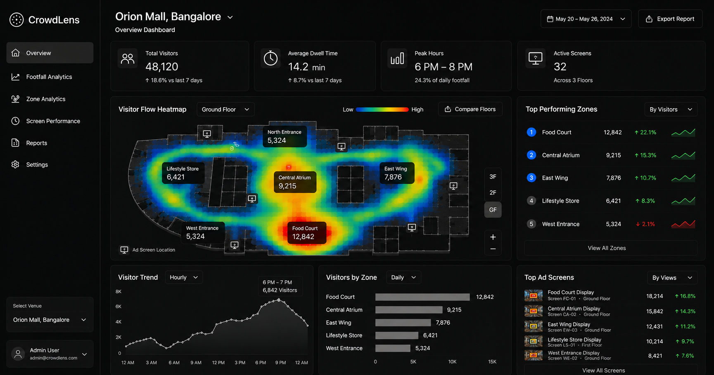

For ad agencies & venue media owners
CrowdLens reads CCTV feeds and other venue sensors to estimate foot traffic zone by zone, hour by hour, so you can quote placements on real footfall instead of a flat rate card.

A screen by the main entrance and a screen next to the fire exit often sell for the same price, because nobody's actually counting who walks past either one, or when. That gap costs agencies money on the way in, and credibility on the way out.
How it works
CrowdLens plugs into existing CCTV, entry counters, and Wi-Fi or beacon data already installed in the venue. No new hardware to mount.
Our models convert raw feeds into anonymized traffic counts per zone, broken down by hour, day of week, and season.
CrowdLens turns those counts into a suggested rate per zone and time slot, so quotes are backed by numbers a client can check.
Product
See traffic broken down by exact spot in the venue, not one footfall number for the whole building, but a reading for every entrance, aisle, and screen.
Traffic by time of day and day of week, so a 7pm slot prices differently from a Tuesday morning.
A suggested price per zone and time slot that updates as traffic shifts, not a rate card fixed a year ago.
Plugs into CCTV and counters already installed in the venue. No new cameras to mount.
Anonymized traffic counts only. No facial recognition, no identity data. More below.
The pricing curve
Instead of one flat rate, CrowdLens maps expected traffic across the hours a screen or panel is live, so a 6 to 8pm slot at the main entrance can be quoted at what it's actually worth, and a slow 11am slot doesn't get priced the same way.
Main entrance · weekday traffic estimate
Privacy, up front
CrowdLens processes footage to produce anonymized movement and headcount data per zone. No facial recognition, no identity matching, and no images are stored after processing. The output is numbers, not people.
We'll walk through a sample zone map and pricing curve using data close to your venue type. No setup required for the demo.